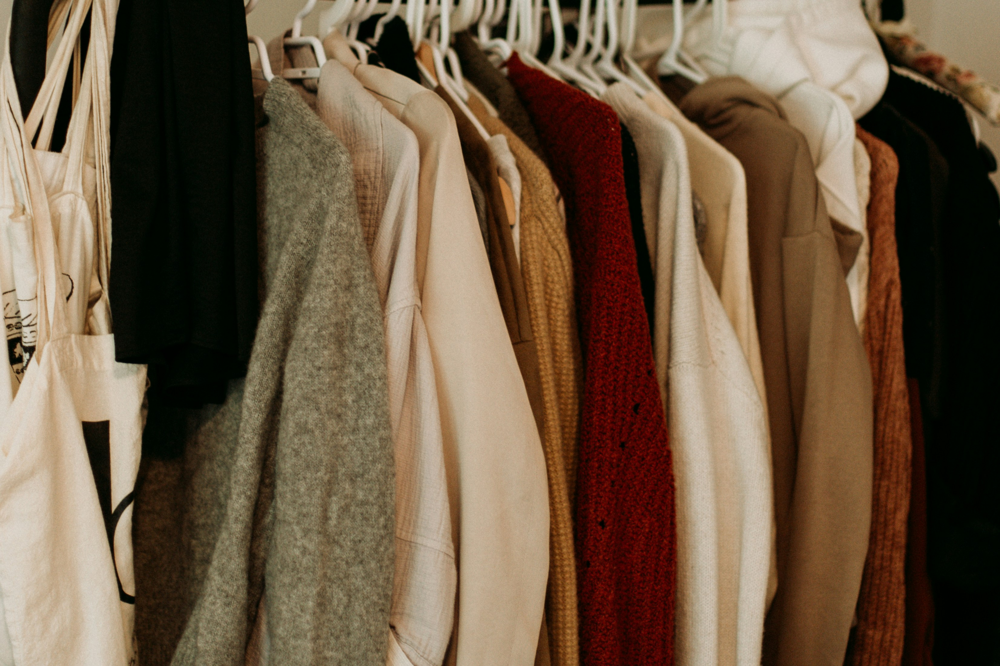

Tu negocio tiene potencial.
Falta claridad para moverlo.
Estrategia, tecnología y un enfoque humano para no perder el paso del negocio.
Para empresas que saben que no avanzar también cuesta.
Los problemas no discriminan por
tamaño, facturación o trayectoria
Colaboramos en todas y cada una de las 10 dimensiones de una organización — aportando soluciones, método, estudio o ideas.
¿Te suena familiar?
Ritmo de decisión
Las decisiones lentas suelen costar más que las equivocadas. Un flujo constante de ideas dentro de un método robusto.
Enfoque operativo
El día a día te consume. Es fundamental contar con el espacio para proyectar lo que viene y metabolizar lo que pasó.
Cuellos de botella
La operación también necesita madurar. Revisar procesos, roles y dinámicas permite ganar solidez, robustez y continuidad.
Datos sin explotar
La información está ahí, juntando polvo: si tenes los datos y están dispersos o fuera del proceso, estas desaprovechando potencial.
No faltan ganas, no faltan ideas. Es difícil pensar con perspectiva cuando el día a día te empuja todo el tiempo. Ahí entra Chanwe.
¿Por qué Chanwe?
Chanwe es la línea que separa a quienes reaccionan de quienes deciden.
Es esta filosofía la
que define nuestra forma de trabajar.
Change - Transformación
Nos movemos de un equilibrio a otro, esa mentalidad de cambio constante que debe impulsar cada decisión.
We - Codo a Codo
Trabajamos juntos, resultados obtenidos juntos, la confianza y la construcción de valor son un proceso continuo.
El Changüí
Ese margen que hace tu negocio distinto y le da personalidad, va cuidado y potenciado.
Cómo lo hacemos
La profesionalización es el camino, no el punto de llegada. Construir visión, método, orden y criterio es parte de un flujo constante dentro de la empresa. Donde otros ven obstáculos, nosotros vemos la materia prima para la transformación.
Líneas de servicio
Diversos frentes. Una única dirección. Una empresa es una entidad compleja en todo momento, lugar y forma.
Insights de la Industria para cada Industria
Reinventarse o desaparecer: el caso Libertad y la transición del supermercado tradicional al real estate retail
Cómo Grupo Libertad reorientó su estrategia hacia sus fortalezas inmobiliarias para adaptarse a nuevos hábitos de consumo y a una competencia más intensa.

Bueno, bonito y barato: cuando la disciplina de margen se convierte en ventaja competitiva
Cómo algunas empresas en industrias altamente competitivas logran sostener precios competitivos y estándares de calidad a través de la transparencia y la credibilidad con su entorno.
Desafiar a toda la industria: cómo Google derribó un axioma y cambió la experiencia web para siempre
Cómo Google desafió la lógica dominante de los portales de búsqueda al priorizar velocidad, experiencia de usuario y volumen antes que monetización inmediata.
Una mirada rápida y completa para entender dónde estás parado
Diseñamos Pulse para acompañarte pregunta a pregunta y ayudarte a descubrir cuánto conocés realmente tu negocio, y cuánto creías conocerlo. Un diagnóstico introspectivo, holístico y claro, 100% online y gratuito.
- 30 minutos
- Acceso inmediato
- Reporte por e-mail
Respondés
Preguntas breves sobre tu operación para entender de dónde venís, dónde estás parado y en qué contexto te desenvolvés.
Analizamos
Analizamos tus respuestas con nuestro framework propietario de 10 dimensiones para construir una lectura clara del escenario actual de tu organización.
Recibís
Recibí un reporte personalizado en menos de 24 horas y, si querés, podemos profundizar juntos en tu situación actual.
¿Aún tenés dudas?
Charlemos
Coordinemos una reunión, en persona o virtual, para conversar. Escribinos desde la página de contacto.